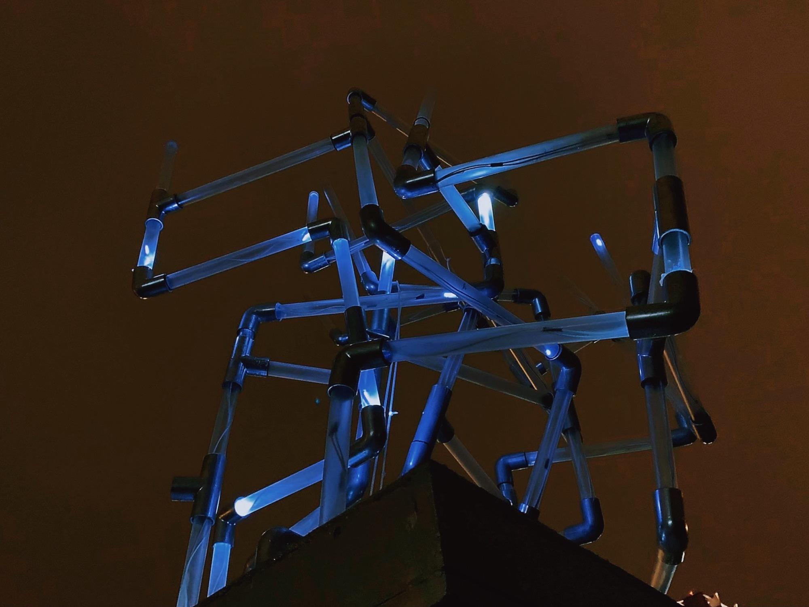
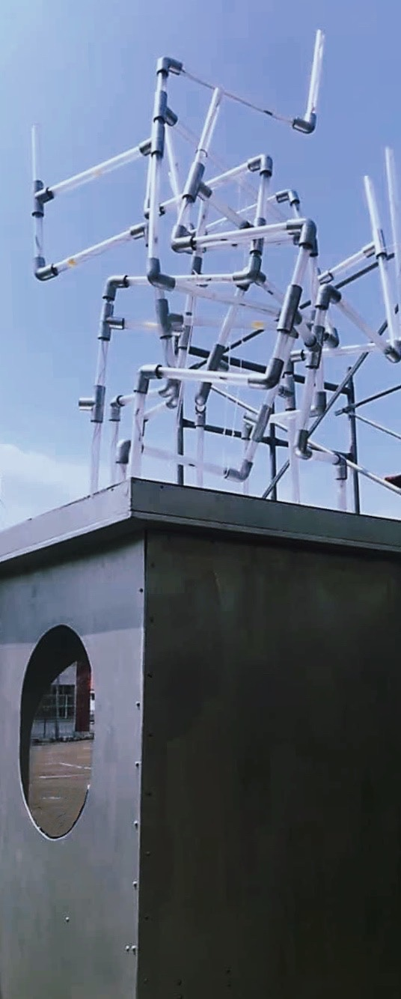
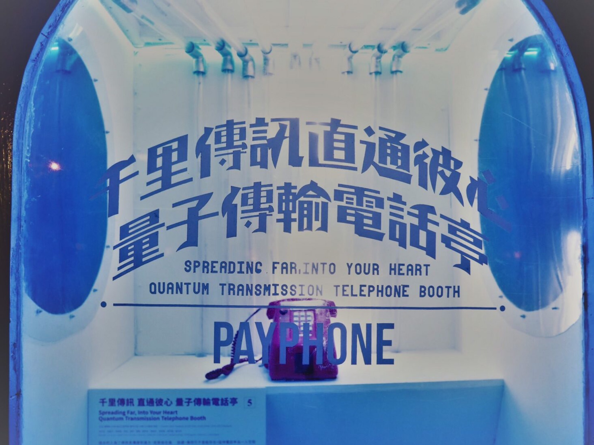

10 — 2020 — Outdoor light installation
Quantum Transmission Phone Booth
千里傳訊直通彼心 量子傳輸電話亭
燈光隨通話聲音變化的電話亭裝置。A phone booth whose lights respond to the caller's voice.
- Medium
- Acrylic, wood, LED strips, telephone, Arduino · 100 × 100 × 240 cm
- With
- Shih Chien Architecture × TNUA New Media × NTU Civil Engineering
- Role
- Arduino lighting + telephone control, structure fabrication
- Shown
- 2020 C-LAB Lightweight cross-school workshop, lawn in front of Building B
01
電話亭是專屬一人的空間。本作中，對話筒說話會驅動亭內燈光與頂部燈管的明暗變化，周圍的人能看見通話正在進行，卻聽不到內容。
A phone booth is a space for one person. Here, speaking into the handset drives the lights inside the booth and the tubes above it, so people nearby can see a conversation taking place without hearing it.
02
本作為 C-LAB 跨校工作營作品，與建築系、土木系學生於一週內共同完成。負責以 Arduino 讀取話筒音訊並控制 LED，並參與亭體製作。
Created in a one-week cross-school workshop at C-LAB with architecture and civil engineering students. Responsible for the Arduino system that reads the handset audio and drives the LEDs, and for building the booth structure.



- Electronics
- Arduino audio-to-light control, LED strips
- Fabrication
- Booth body in wood and acrylic
- Team
- Cross-school, 3 departments
- Venue
- C-LAB, Taipei